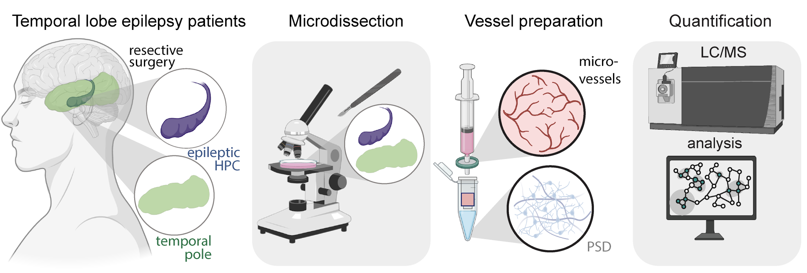

Paired proteomic analysis of Microvessels (BBB) and PSD Fraction (Neuronal) from 5 epilepsy patients, comparing the epileptic hippocampus against the temporal pole (within-patient control).
Proteins are shown as log2 fold-change (hippocampus vs. temporal pole) per patient. Positive values indicate higher abundance in the epileptic hippocampus.

| Ligand | Receptor | Ligand FC | Receptor FC | Direction | Type | Group |
|---|